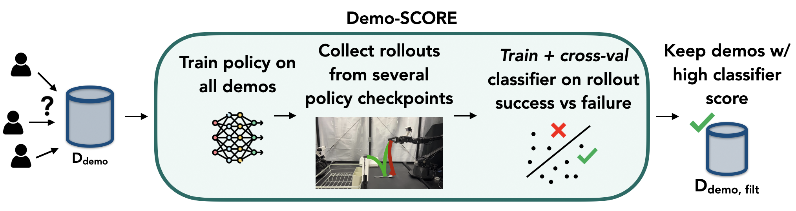

Many robot demonstration datasets contain heterogeneous demonstrations of varying quality. This heterogeneity may benefit policy pre-training, but can hinder robot performance when used with a final imitation learning objective. In particular, some strategies in the data may be less reliable than others or may be underrepresented in the data, leading to poor performance when such strategies are sampled at test time. Moreover, such unreliable or underrepresented strategies can be difficult even for people to discern, and sifting through demonstration datasets is time-consuming and costly. On the other hand, policy performance when trained on such demonstrations can reflect the reliability of different strategies. We thus propose for robots to self-curate based on online robot experience (Demo-SCORE). More specifically, we train and cross-validate a classifier to discern successful policy roll-outs from unsuccessful ones and use the classifier to filter heterogeneous demonstration datasets. Our experiments in simulation and the real world show that Demo-SCORE can effectively identify suboptimal demonstrations without manual curation. Notably, Demo-SCORE achieves over 15-35% higher absolute success rate in the resulting policy compared to the base policy trained with all original demonstrations.
 Our approach consists of the following main steps: first, we train an initial policy on the full set of demonstrations. We then use the policy to generate rollouts that are used to train a data quality classifier to distinguish between successful and failed outcomes. This classifier is subsequently applied to the original dataset to perform filtering (which can be done at the episode level or the chunk level), retaining only the reliable episodes. One challenge is that classifier may overfit to rollouts from one policy checkpoint--to address this, we cross-validate its performance on rollouts from another checkpoint in the initial policy training run.We evaluate Demo-SCORE on 5 real-world tasks using an ALOHA bimanual manipulation system. For each task, we compare a policy trained on the full mixed-quality set of demonstrations to a policy trained on a dataset filtered with Demo-SCORE. The full dataset for each task was either collected via crowdsourcing or designed to mimic the multimodality of a crowdsourced dataset. Demo-SCORE improved absolute success rates by 15-35% for each task.
JellyBeans**Crowdsourced dataset |
Base policy: The original policy trained on all demonstrations often employs poor strategies, grasping the cup so that it cannot not easily be placed on the table later. Demo-SCORE: After training a new policy on a dataset filtered with Demo-SCORE, the policy grasps the cup in a manner conducive to the next step in the task. |
Strawberry |
Base policy: the policy sometimes attempts to grasp the strawberry from above. This strategy is more natural to a human teleoperator, but is less robust due to the narrow, round cross-section of the strawberry. Demo-SCORE: the policy grasps the strawberry from the side, which is a more robust method for this embodiment. |
Spoon |
Base policy Demo-SCORE |
Chocolate |
Base policy Demo-SCORE |
Sharpie |
Base policy Demo-SCORE |
For the strawberry and sharpie tasks, we show the rollout distributions at early and late checkpoints of the initial policy run, the composition of demonstrations kept by Demo-SCORE compared to the original distribution of demonstrations, and the resulting rollout distribution after filtering. The x axis represents step number in the trajectory, and the y axis represents the first PCA component of the joint positions. Demo-SCORE keeps demos that resemble successful rollouts in the dataset while filtering out demos that resemble failed rollouts. The new policy trained on the filtered dataset then resembles the successful rollouts.